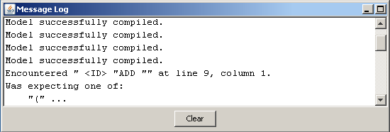

9. Message Log Window

This window shows all errors and warnings that occurs during a compilation and additional information at simulations. The button
Clear
removes all window contents.
Previous Page
Table of Contents